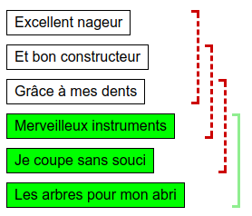
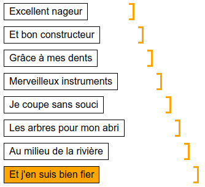

Solution
On cherche un morceau de longueur 3. Il y a 4 morceaux possibles. On peut les tester dans l'ordre, en considérant les lignes 1 à 3, puise 2 à 4, puis 3 à 5, puis 4 à 6.

Vu qu'on a testé tous les morceaux possibles, on finit forcément par trouver le bon. Notez que l'ordinateur fait en sorte que ça soit toujours le dernier fragment que l'on teste qui soit le bon.
On cherche le plus long morceau du poême qui a été copié. Une méthode simple consiste à tester tous les morceaux possibles, sans réfléchir. Ainsi, on peut tester tous les morceaux de longueur 1. Il y en a 8 différents.

Puis on teste tous les morceaux de longueur 2. Il y en a 7 différents.

Puis on continue, en testant les 6 morceaux de longueur 3, les 5 morceaux de longueur 4, et les 4 morceaux de longueur 5. On arrive à la situation suivante.

Il reste alors 3 morceaux de longueur 6, et 2 morceaux de longueur 7, et un morceau de longueur 8. On continue, et un peu avant d'avoir tout terminé, l'ordinateur nous indique que l'on a trouvé le bon morceau.
Remarque : une solution plus efficace est décrite dans la version 4 étoiles de ce défi.
Afin de développer une stratégie méthodique et efficace pour trouver le plus long morceau ayant été cité, commençons par quelques observations.
- Si on a trouvé un morceau d'une certaine taille ayant été cité (trait dessiné en orange), alors dans la suite on ne cherchera que des morceaux strictement plus longs. En effet, l'objectif est de trouver le morceau cité le plus long.
- Si on a trouvé un morceau n'étant pas cité (trait dessiné en rouge), alors dans la suite il est inutile de chercher des morceaux qui commencent à la même position. En effet, si un morceau englobe un morceau non cité, le morceau englobant est forcément lui aussi non cité.
On va exploiter ces deux observations en procédant de la manière suivante.
- On commence avec la première ligne du poême toute seule, c'est à dire un morceau de longueur 1 tout au début du poême.
- On essaie d'agrandir ce morceau partant de la première ligne, tant que l'ordinateur nous indique que le morceau a été cité. Dès que ce n'est plus le cas, il n'est plus utile de chercher des morceaux commençant à la première ligne, on passe donc à des morceaux commençant à la seconde ligne.
- Lorsque l'on passe à l'étude des morceaux commençant à la seconde ligne, on peut commencer directement par une longueur égale à une unité de plus que la longueur du plus grand trait orange (morceau ayant déjà été cité). Autrement dit, lorsqu'on décale la position du début d'une case, on décale également la position de la fin d'une case, de sorte à conserver la taille des morceaux que l'on était en train de tester.
On répète le principe suivant, en agrandissant la longueur du segment commençant à la deuxième ligne, jusqu'à ce que l'on obtienne une réponse négative (trait rouge). On passe alors à la troisième ligne, en décalant le début et aussi la fin du segment. On continue ainsi de suite, jusqu'à ce qu'on ait trouvé le segment le plus long.

On peut analyser cet algorithme pour démontrer qu'il permet toujours de trouver la réponse en au plus 12 tests. À chaque étape, soit on fait avancer la position de la fin, soit on fait avancer la position du début et de la fin. Comme la position de la fin avance d'une ligne à chaque fois, et qu'il n'y a que 12 lignes en tout, on est certain de pouvoir résoudre le sujet en 12 tests, quelle que soit la stratégie de l'ordinateur.
C'est de l'informatique !
Ce défi illustre un principe commun à de nombreux algorithmes, nommé le principe de la fenêtre glissante. Ce principe peut s'appliquer lorsqu'on a une séquence d'éléments, et qu'on cherche un sous-ensemble d'éléments consécutifs (c'est-à-dire à la suite les uns des autres) ayant une propriété particulière.
La fenêtre décrit le sous-ensemble "en cours". La fenêtre peut être décalée d'un cran, en avançant à la fois la position du début et de la fin de la fenêtre, comme par exemple dans la version 2 étoiles de ce défi, où la fenêtre contient toujours 3 éléments. Il est également possible de faire avancer indépendamment le début et la fin de la fenêtre, comme par exemple dans la version 4 étoiles de ce sujet.
Ce qui rend les algorithmes basés sur des fenêtre glissantes efficaces est que la position du début et la position de la fin de la fenêtre ne peuvent que avancer, jamais reculer.